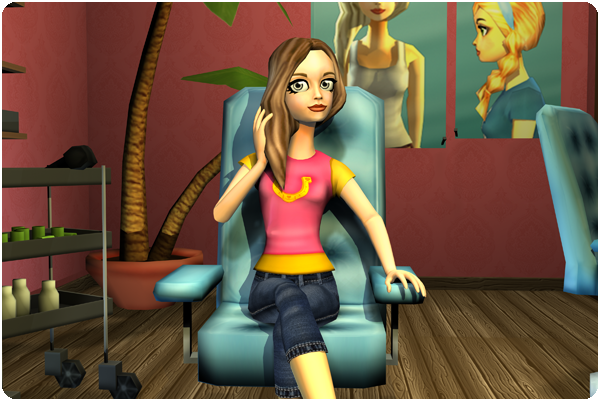

Hello everyone!
Here's this week's update!
New equipment:
A new kind of exclusive horse blankets has arrived to our beloved island! You can buy these in shops all over Jorvik!
New beauty salon:
A new beauty salon is now open in Fort Pinta with brand new cool hairstyles and makeup!

Disco Night:
It's time for another Disco Night this Friday! Everyone who logs in on Friday will get the t-shirt that the girl in the picture above is wearing which is specially designed for this event. Come by and dance away!
New decoration shop:
Another decoration shop has opened in West Cape Fishing Village with new pretty decorations for your horse!
Rebuilding in Fort Pinta:
The towers in Fort Pinta are reconstructed. Ride up to the very top and enjoy the fantastic view that Fort Pinta offers!